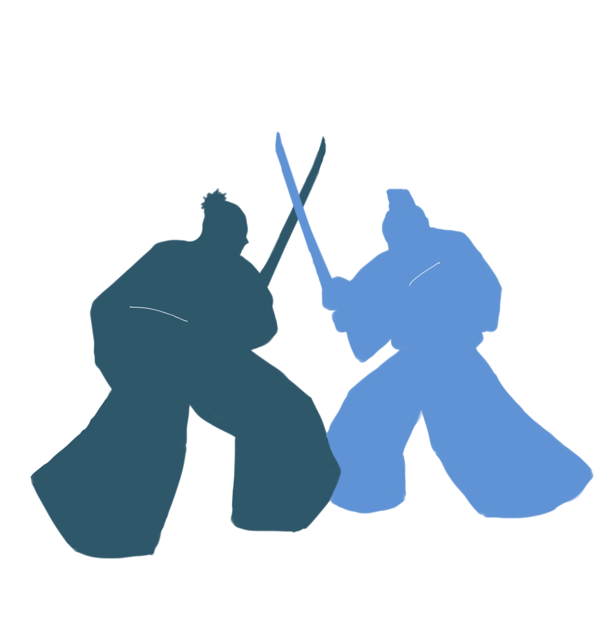
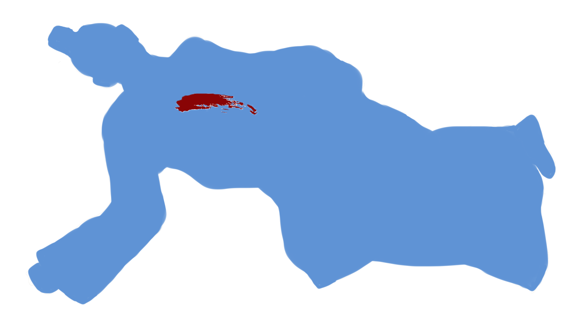

·Listen to me·
·I will tell you who killed Kanazawa·



I didn't like to resort to unfair means to kill him, so I untied him and told him to cross swords with me.
I needn't tell you how our fight turned out.
But I'm very impressed with the twenty-third stroke we crossed.
Nobody under the sun has ever clashed swords with me twenty strokes. (A cheerful smile.)
When he fell, I turned toward the woman, but she was gone. She may have run away to call for help. It was a matter of life and death to me.
So, robbing him of his sword, and bow and arrows, I ran out to the mountain road and found her horse. There’s no need to tell the later details, but before I entered town I had parted with the sword.
I know that my head will be hung in chains anyway, so put me down for the maximum penalty.
>>
In the course of time I came to, and found that the man in blue silk was gone. My husband was still bound to the root of the cedar.
Shame, grief, and anger… I don't know how to express my heart at that time.
I said to Kanazawa, "since things have come to this pass, I cannot live with you. You saw my shame. I can't leave you alive as you are. Now give me your life. I'll follow you right away.”
Still he went on gazing at me with loathing and contempt. My husband’s mouth was stuffed with leaves, but I understood that his despising look said only "kill me."
Both his sword and his bow and arrows must have been taken by the robber. Fortunately my small sword was lying at my feet.
Neither conscious nor unconscious, I stabbed the small sword through the lilac-colored kimono into his breast.
I must have fainted again. When I came to myself, my husband was already dead. I untied the rope from his dead body.
I stabbed my own throat with the small sword, I threw myself into a pond at the foot of the mountain, and I tried to kill myself in many ways.
Unable to end my life, I am still living in dishonor.
>>
The robber quietly folding his arms, said to me, "What will you do with her? Kill her or save her?" For these words alone I would like to pardon his crime.
While I hesitated, she shrieked and ran into the depths of the grove.
After she ran away, he took up my sword, and my bow and arrows. He cut one of my bonds and mumbled "My fate is next." Then he disappeared from the grove.
I raised my exhausted body from the foot of the cedar. In front of me there was the shining small sword which my wife had dropped. I took it up and stabbed it into my breast.
Then someone crept up to me. I couldn’t see who it was. That someone drew the small sword softly out of my breast in its invisible hand.
At the same time once more blood flowed into my mouth. And once and for all I sank down into the darkness of space.
>>